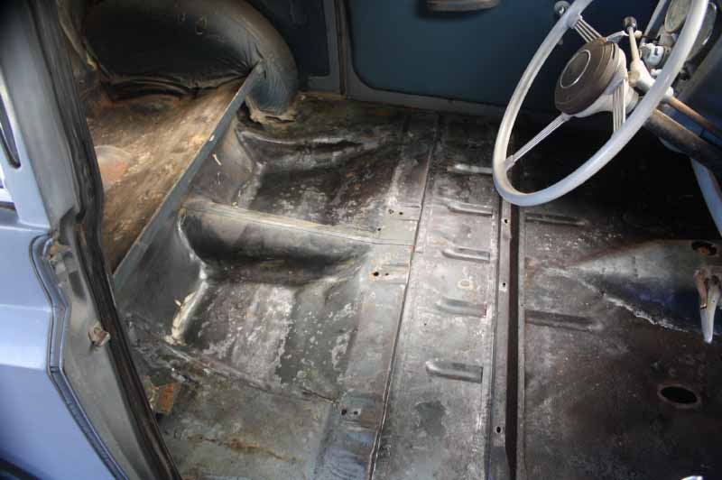
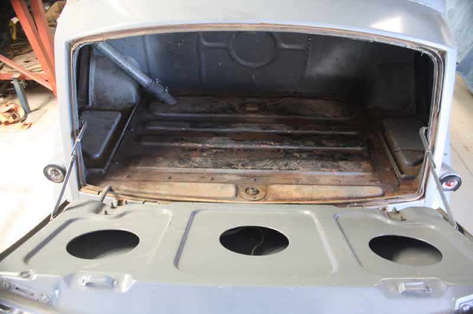
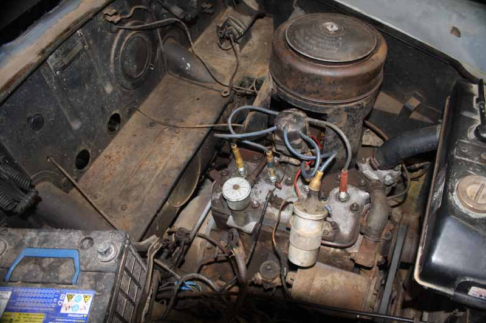
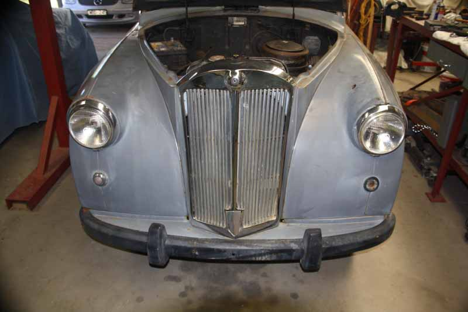

Car Builds
Content for this section is at present very thin. Unless your Mayflower has been kept in cotton wool for over 65 years then it is likely to have had a re-build at some time in its life. Please dig out those photos showing seventies flares, dodgy hair cuts (the time when we all had hair) and of course the re-builds themselves.
If possible, give a few details of how the build went, its extent, duration and any other details you might wish to share.
This could be a very interesting and informative section – we just need material!
Rob Davies (website editor).
Australian barn find
Brief story of conservation
· 22nd March 2018
Here are a few photos of my “barn find” Mayflower.
It has not been road-registered since 1969, having recently been pulled out of a shed in Central Western Victoria. It started and ran after putting water, petrol and a battery in it!
The photo of the floor was taken after removing the carpet, underlay and sound deadening, along with about half a kilo of mouse droppings and giving it a quick clean. No rust at all after 67 years! I have replaced the sound deadening and carpet as it was far too old and smelly. The rear seat and headlining are original, but the front seats and door panels have been recovered some time in the cars life.
The boot was hosed out and allowed to dry before I took the photo.
The photo of the front of the car was taken the day I picked it up, after giving it a quick wash.
The dashboard panels were supplied by Brian Holloway, and the new knobs by Brian Redshaw. It now looks great compared to what it was. Thanks, gentlemen.
I have replaced all the suspension rubbers, ball joint boots, tyres and most other rubber parts (hoses, grommets, bungs, etc.) as all were badly deteriorated. I will also need to replace the master cylinder before the car can be registered. I am not planning to restore it, just to conserve it as it is as a testament to the quality of the build of these old vehicles.
Regards,
Phil Stafford
   